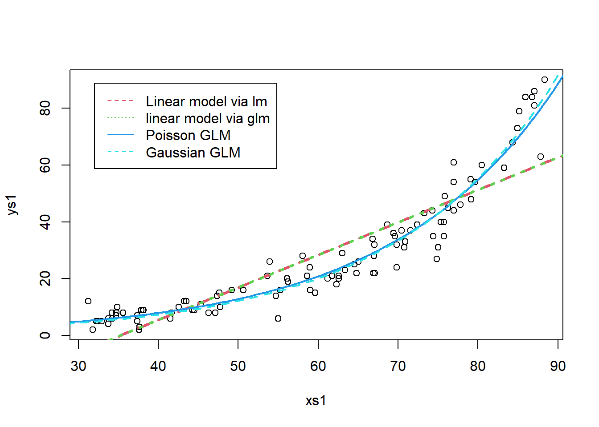

Chapter 14 An introduction to generalized linear models
14.1 What are GLMs
Until now we have been dealing with linear regression models, with a common set of characteristics. The variance of the residuals is constant and their distribution is Gaussian. While that is a very useful model and has been widely used for over a century to model all sorts of phenomena, these hardwired characteristics make such a model inflexible. Therefore, we need to include some more flexible models in our toolbox.
Generalized linear models come to help, as they will generalize the Gaussian linear model in three fundamental ways:
They will relax the assumption that the residuals of the model are Gaussian, by allowing the user to specify different families for the response variable. These families will be from the Exponential family of random variables. While this is perhaps confusing wording, it is important to note that this should not to be confused with the Exponential distribution, which happens to be a special case of a Gamma random variable. The Gamma happens to be, like the Poisson or even the Gaussian, one of the distributions from the exponential Distribution.
They become more flexible than the standard Gaussian linear model by allowing the relation between the response and the linear predictor to be mediated via a link function. This link function adds another very useful feature: the predictions from the response variable can be constrained to take only admissible values. case in point, a probability can be constrained to be between 0 and 1, and a weight can be constrained to be strictly positive, by choosing an appropriate link function.
The use of a link function induces a complication that often confuses practitioners. We can now have predictions on the scale of the link function, but also predictions on the scale of the response. While the predictions on the scale of the link function are the default in R, these mean often very little in practice, and humans will have trouble understanding them. There might be a good reason why predictions from a GML based on the omnibus R function predict.glm are by default on the scale of the link function, but to be fair I find this to be the exception need, not the rule, when doing applied work.
In the LM case we had, for \(K\) independent variables, the following formulation for the model
\[E(y)=\beta_0+\beta_1x_1+\beta_2x_2+...+\beta_Kx_K\]
and when considering observations
\[y_i=\beta_0+\beta_1x_{i1}+\beta_2x_{i2}+...+\beta_Kx_{iK}+e_i\]
where the \(e_i\) would be Gaussian with mean 0 and a constant variance \(\sigma^2\). In the generalized linear model we can choose a family for the response variable, and we have the relation between the mean value of the response mediated by a link function, represented by \(f\), therefore
\[f(E(y))=\beta_0+\beta_1x_1+\beta_2x_2+...+\beta_Kx_K\]
and therefore
\[E(y)=f^{-1}(\beta_0+\beta_1x_1+\beta_2x_2+...+\beta_Kx_K)\]
Note that the above implies that the linear model is just a GLM with a Gaussian response and an identity link function.
It is interesting to note an often under-appreciated distinction between the Gaussian linear model and the other GLMs. While the Gaussian model implies that the residuals are Gaussian, no one knows what is the distribution of a Poisson, Gamma or Binomial GLM. This fact is often hard to grasp also because diagnostic plots produced for GLMs transform the residuals in an attempt to make them look normal. In some cases, like in the binomial case, that attempt is typically doomed from the start!
While the choice of the right link function is fundamental for a GLM’s performance, that is often an easy decision since the key aspect is to insure only admissible estimates from the model. Arguably the most common link functions are the identity, the log and the logit.
14.2 The link function
Here we talk about link functions
Illustrate how a link function can be used to ensure that a prediction only returns admissible values
a<-0.04
b<-0.08
par(mfrow=c(2,2))
xs<-seq(-30,20,by=0.01)
plot(xs,ilogi(lp(a,b,xs)),ylim=c(0,1))
abline(h=0:1,lty=1)
xs<-seq(-30,20,by=0.01)
plot(xs,ilogi(lp(0.9,12,xs)),ylim=c(0,1))
abline(h=0:1,lty=1)
xs<-seq(-3,2,by=0.01)
plot(xs,ilogi(lp(0.9,12,xs)),ylim=c(0,1))
abline(h=0:1,lty=1)
xs<-seq(-1,1,by=0.01)
plot(xs,ilogi(lp(0.9,12,xs)),ylim=c(0,1))
abline(h=0:1,lty=1)In the following, I deal with the following task. Make up a predictor with 2 variables, create the inverse functions for the 1. log link function 2. logistic link function and convince yourself that, irrespective of what the parameter values might be for the covariates, or the value of the covariates used for that matter, the predictions are always bounded to be, respectively 1. Positive, or 2. between 0 and 1 This illustrates the power of a link function to constrain the predictions to an admissiblke range, a strong advantage of the GLM framework when compared to the LM framework.
# make up a linear predictor
set.seed(6)
#intercept
beta0 <- -2
#the coeficint for x1
beta1 <- -0.023
# the coefficeint for x2
beta2 <- +0.04
n<-100
x1s<-runif(n,10,30)
x2s<-runif(n,1,2)
par(mfrow=c(1,3),mar=c(4,4,3,0))
#LINEAR PREDICTOR
lp<-beta0+beta1*x1s+beta2*x2s
boxplot(lp,main="Linear predictor")
# RESPONSE: but we know, that there's a log link involved
Ey<-exp(lp)
boxplot(Ey,main="Log link")
#rESPONSE: but we know, that there's a logit link involved
Ey<-1/(1+exp(lp))
boxplot(Ey,main="Logit link")
14.3 Most useful GLM Families
These are arguably
- Gaussian - the standard for continuous data;
- Gamma - an alternative to the Gaussian for strictly positive data, like lengths, weights or animal densities;
- Beta - still an outsider, but clearly under-appreciated, as it can be invaluable to model responses that are probabilities (Douma and Weedon 2019). Not to confuse when one wants to model the probability of successes of yes or no events; see below, for that the Binomial is the omnibus candidate.
- Poisson - the default count model, but quite inflexible as it implies that the variance is equal to the mean, which is the exception rather than the norm for ecological count data;
- Binomial - the default model for yes/no or presence/absence data, also useful to model under-dispersed (var<mean) counts, which are rare in biology/ecology
- Negative Binomial - the default candidate for over-dispersed (var>mean) counts; an alternatives for over-dispersed counts is the quasi-Poisson (Ver Hoef and Boveng 2007)
In recent years flexible families like the Tweddie distribution, that include several of the above, have been gaining ground in the Ecological literature.
14.4 An example analysis
We begin by simulating data from a real GLM model. We simulate data from a Poisson regression. Note the difference between what is required now and the way we would simulate data before, in the Gaussian case. While before we would simply add the errors to the expected value given the linear predictor - since we knew the distribution of the errors to be Gaussian, by assumption, this is no longer possible because once the family becomes not Gaussian we do not know what is the distribution of the residuals. Therefore, to simulate data from a non-Gaussian GLM implies a two stage process:
- First we generate the linear predictor, and then
- we apply to the linear predictor the inverse link funcion, and finally mean value of the response, and then
- we simulate data from the appropriate distribution (e.g. below Poisson), conditional on the corresponding mean.
We simulate some data, and pretend these would correspond to the weight of a lizard, in grams, as a function of the length of the lizards, in mm. Please, don’t double check my numbers, they probably do not add up for any reasonable species of lizard, but that is a detail in this story.
set.seed(121)
#define sample size
n<-100
#get a predictor variable
low<-30
high<-90
xs1<-runif(n,low,high)
#get a second potentially predictor
#not used
#xs2<-rgamma(n,10,10)
#define linear predictor
lp1<-0.01+0.05*xs1
#get the mean value
Eys1<-exp(lp1)
#get actual data
ys1<-rpois(n,Eys1)We can plot side by side the linear predictor, hence in the scale of the link function, the mean value of the response, and then a realization of the process, that is, the actual data
par(mfrow=c(1,3),mar=c(4,4,3,0.1))
plot(xs1,lp1,main="Linear predictor",xlab="Lizard length (mm)",ylab="lp1")
plot(xs1,Eys1,main="Response mean value",xlab="Lizard length (mm)",ylab="Eys1")
plot(xs1,ys1,main="The observed data",xlab="Lizard length (mm)",ylab="Lizard weight (g)")Note that, while the model is linear on the scale of the link function, the relationship is not linear on the scale of the response. This illustrates some additional flexibility compared to the Gaussian linear model. The fact that the model is linear on the link scale is easily perceived from the code, and transparent in the plot above, left panel.
Now, we can fit some models to the simulated data using the function glm. Note just as for the lm function we need to define the formula that represents the model, and we need to use the argument data to let lm know where to find the variables. The novelty lies in the family argument, that sets the assumed distribution for the response, and eventually also allows you to specify a link function.
Next we will fit a number of generalized linear models to this dataset, to illustrate the consequences of using different families for the response variable and different link functions on the predictions. We will fit:
- a standard linear model, using
lm, and then using the functionglm, we fit - a generalized linear model with the Gaussian family and the identity link (just to check that it is the same as above, i.e., the linear model is a special case of a generalized linear model)
- a generalized linear model with the Gaussian family and the log link
- a generalized linear model with the Poisson family and the log link
- a generalized linear model with the Gamma family and the inverse link (the canonical link function for the Gamma)
- a generalized linear model with the Gamma family and the log link
Note that as usual when simulating data we have the privilege of knowing the true generating model, in this case, the Poisson with the log link. The Gaussian model with a log link function assumes a Gaussian response, but forcing predictions to be strictly positive. We implement the Gaussian identity link model both using lm and glm, to illustrate once again these are one and the same (and to remind you that if you forget to define the family in glm, you’re just fitting the standard linear model by default). The coimparisong across these apparently different ways to fit the Gaussian linear model follows
We plot the predictions on top of each other, and no surprises here, the 3 implementations return the exact same thing:
plot(ys1~xs1,xlim=c(20,100))
xs<-seq(low-5,high+5,by=0.5)
novosdados<-data.frame(xs1=xs)
predslm1A<-predict(lm1A,newdata=novosdados)
predslm1B<-predict(lm1B,newdata=novosdados)
predslm1C<-predict(lm1C,newdata=novosdados)
lines(xs,predslm1A,col=1,lty=1,lwd=6)
lines(xs,predslm1B,col=2,lty=1,lwd=3)
lines(xs,predslm1C,col=3,lty=1,lwd=1)
Unfortunately, and as expected, the predicttions would be nmegative, hence inadmissible, for values of the preditor xs1 smaller than about 35, which is undesirable. This is where the GLMs will come in handy. We now fit those:
glmPoi<-glm(ys1~xs1,family=poisson(link="log"))
glmGau<-glm(ys1~xs1,family=gaussian(link="log"))
glmGamInv<-glm(ys1~xs1,family=Gamma(link="inverse"))
glmGamLog<-glm(ys1~xs1,family=Gamma(link="log"))We can look at the outcome of these overlaid on the data. The fundamental aspect when predicting from a glm model is that we need to be careful with the type argument. By default the predictions are on the scale of the link function, hardly helpful for you as a practitioner. Hence, you need to set type="response". I can’t say I’d be a millionaire if I had a penny every time a student could not understand the predictions of a glm model because they are looking at predictions on the link scale, but I would nonetheless probably be able to buy a decent meal! (and be careful, because an often found bug is the type=response argument being defined by mistake inside the newdata data.frame, and that throws no error but means that you will be predicting for the data used for the model fitting, not the actual newdata as intended),
plot(ys1~xs1,xlim=c(10,110),ylim=c(0,100))
xs<-seq(low-5,high+5,by=0.5)
novosdados<-data.frame(xs1=xs)
predslm1A<-predict(lm1A,newdata=novosdados)
predsglmPoi<-predict(glmPoi,newdata=novosdados,type="response")
predsglmGau<-predict(glmGau,newdata=novosdados,type="response")
predsglmGamInv<-predict(glmGamInv,newdata=novosdados,type="response")
predsglmGamLog<-predict(glmGamLog,newdata=novosdados,type="response")
lines(xs,predslm1A,col=2,lty=2,lwd=3)
lines(xs,predsglmPoi,col=4,lwd=2)
lines(xs,predsglmGau,col=5,lty=2,lwd=2)
lines(xs,predsglmGamInv,col=6,lwd=2)
lines(xs,predsglmGamLog,col=7,lty=2,lwd=2)
legend("topleft",legend=c("Gaussian","Gaussian log","Poisson log","Gamma Inverse","Gamma log"),lwd==c(3,2,2,2,2),col=c(2,4,5,6,7),lty=c(1,2,2,3,2),inset=0.05)
As expected, the linear model does the wrong thing. It was the wrong model, and it even produces inadmissible values. As an example, a lizard with 30mm length would be estimated to have -5.98 grams, and I guess you have never seen a lizard of negative weight! All the GLMs with a log link, the Poisson, the Gamma and the Gaussian, provide very similar point predictions. But this does not mean they are equal, because the different response models imply that the precision around predictions made form these models will be different.
The usual question arises. Here we know what the generating model was, so we can tell which one is best. But how could we have spotted the Gaussian with the log link was the wrong model? Typically we evaluate the goodness of fit of a model by a variety of ways, but visual diagnostics based on the model residuals can be especially revealing. Clearly, the Gaussian model is incorrect, as the variance of the residuals is increasing with the mean, and the qqplot of the residuals indicates considerable lack of fit. This should not come to you as a surprise, since the true model was Poisson and in the Poisson the variance is equal to the mean.

On the other hand, the diagnostics for the Poisson model do not show any reasons to worry. (Something not adding up here re the explanation. How to answer the question: if predictions are the same with both models and the observations are the same by definition, how is it that the residuals differ?).
A really nice and interesting evaluation of model adequacy, or in other words, a different way of looking at the information on the plots produced by default by the plot over a glm model object, is in the package performance, part of the easystats family

Additionally, if we would evaluate the AIC for these contending models, the Poisson model would be by far the most parsimonious. We have not talked about model selection yet, but AIC is a model selection criteria that favours models that fit to the data while penalizing for the number of parameters in the model (e.g. Aho, Derryberry, and Peterson 2014). The lowest AIC represents the most parsimonious model, hence the optimal fit given the amount of data and the number of parameters in the model.
| df | AIC | |
|---|---|---|
| lm1A | 3 | 744.8996 |
| lm1B | 3 | 744.8996 |
| glmGau | 3 | 617.3647 |
| glmPoi | 2 | 590.3504 |
Just to come back to a point made above, notice that different models whcih might lead to similar predictions might not result in the same inferences, because the precision around the estimates made might differ. Consider a comparison between the Poisson model and the Gamma model, both with a log link. We know in the Poisson the mean and the variance are the same, but in the gama the variance can be considerably larger than the mean. Then, let us look at the predictions from the above models, but now lets add on thop some confidence intervals around those predictions:
plot(ys1~xs1,xlim=c(10,110),ylim=c(0,100))
xs<-seq(low-5,high+5,by=0.5)
novosdados<-data.frame(xs1=xs)
predsglmPoi<-predict(glmPoi,newdata=novosdados,type="response",se.fit = TRUE)
predsglmGamLog<-predict(glmGamLog,newdata=novosdados,type="response",se.fit = TRUE)
lines(xs,predsglmPoi$fit,col="blue",lwd=2)
lines(xs,predsglmGamLog$fit,col="green",lty=2,lwd=2)
lines(xs,predsglmPoi$fit-2*predsglmPoi$se.fit,col="lightblue",lwd=2)
lines(xs,predsglmPoi$fit+2*predsglmPoi$se.fit,col="lightblue",lwd=2)
lines(xs,predsglmGamLog$fit-2*predsglmGamLog$se.fit,col="lightgreen",lwd=2,lty=2)
lines(xs,predsglmGamLog$fit+2*predsglmGamLog$se.fit,col="lightgreen",lwd=2,lty=2)
legend("topleft",legend=c("Poisson log","Gamma log"),lwd==c(2,2),col=c("blue","green"),lty=c(1,2),inset=0.05)
As expected, thje precion around the Gamma predictions is larger. Of course, in real life, we might have trouble knowing what is best, but here, the lower variance of the Poisson is what is the real variance, since we know the data generating process (and AIC favours it).
14.5 An example of a GLM as a detail within a conceptualization framework
Present the example of Filipe et al. (2004) here? How we had a question to address, data that contained information about it, and the conceptualization that went on to make the link between the data and the answer. Or as a separate chapter that ronds things up? Might make sense in this class, but somewhere else in a book?